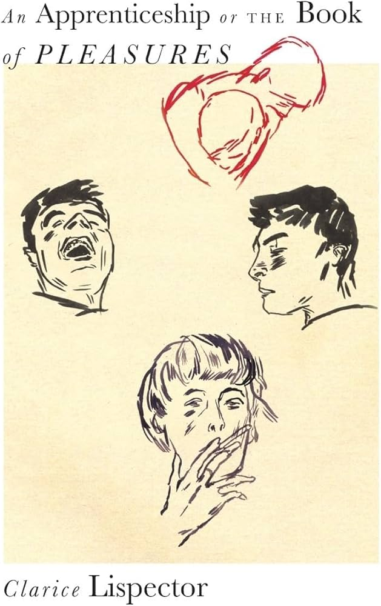
An Apprenticeship or The Book of Pleasures by Clarice Lispector I absolutely adore lispector's work, this was the first one I ever read


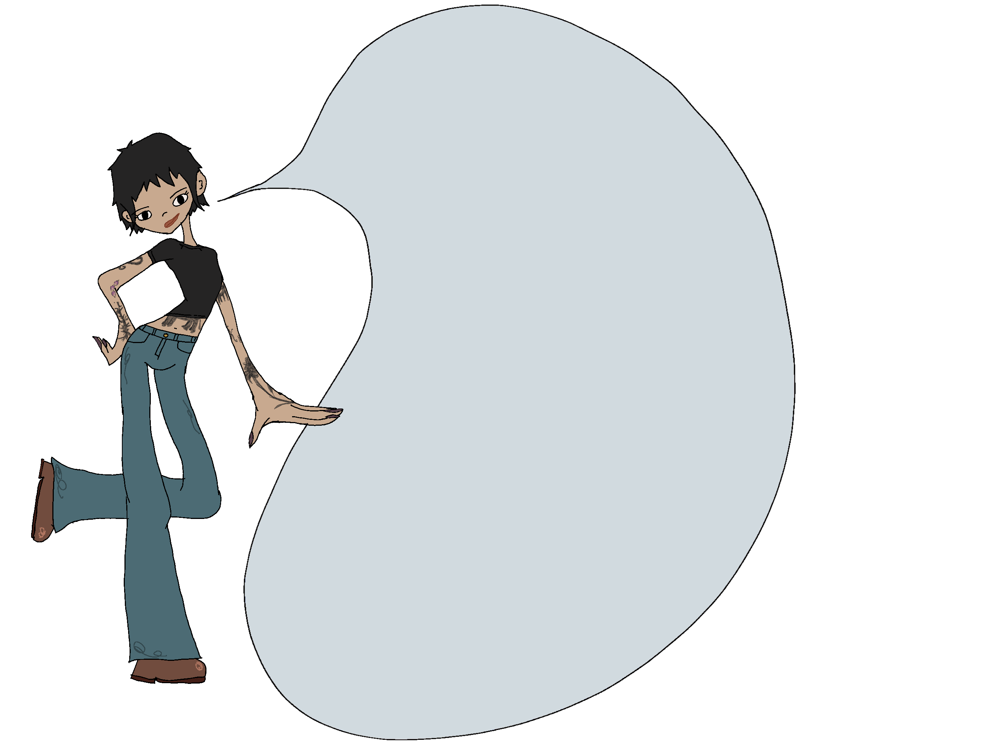
Keep up with my current books on goodreads

An Apprenticeship or The Book of Pleasures by Clarice Lispector I absolutely adore lispector's work, this was the first one I ever read
Agua Viva by Clarice Lispector A staple Lispector that I have no problem recommending widely
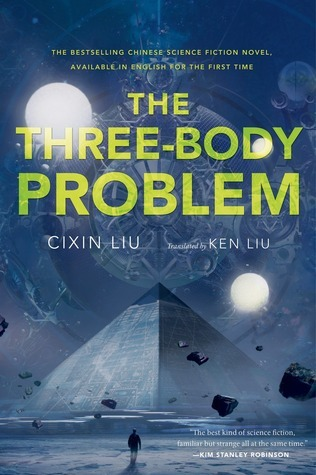
Three Body Problem by Cixin Liu AMAZING trilogy and no I cannot get into the netflix adaptation... from the few episodes I managed to watch, I don't think it's doing the books any justice.
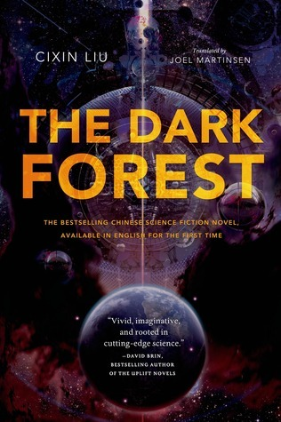
The Dark Forest by Cixin Liu
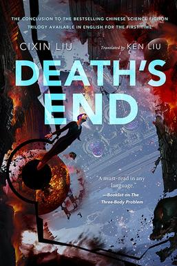
Deaths End by Cixin Liu
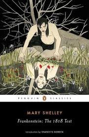
Frankenstein (1818) by Mary Shelley I admit I DNF'd this a few times in the past, but then I finally got past whatever wall I hit and ended up absolutely adoring it.
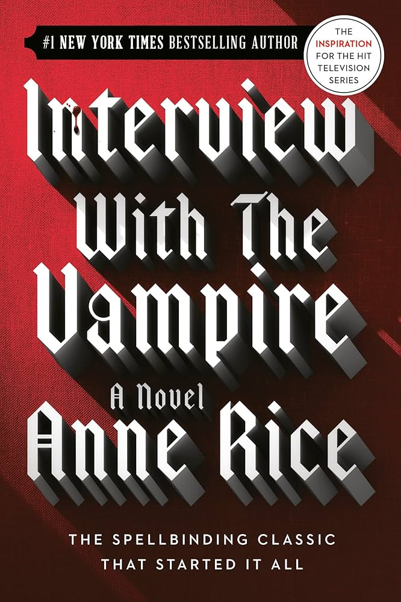
Interview with A Vampire by Anne Rice I loved this one more than I expected to & I look forward to reading more Anne Rice.
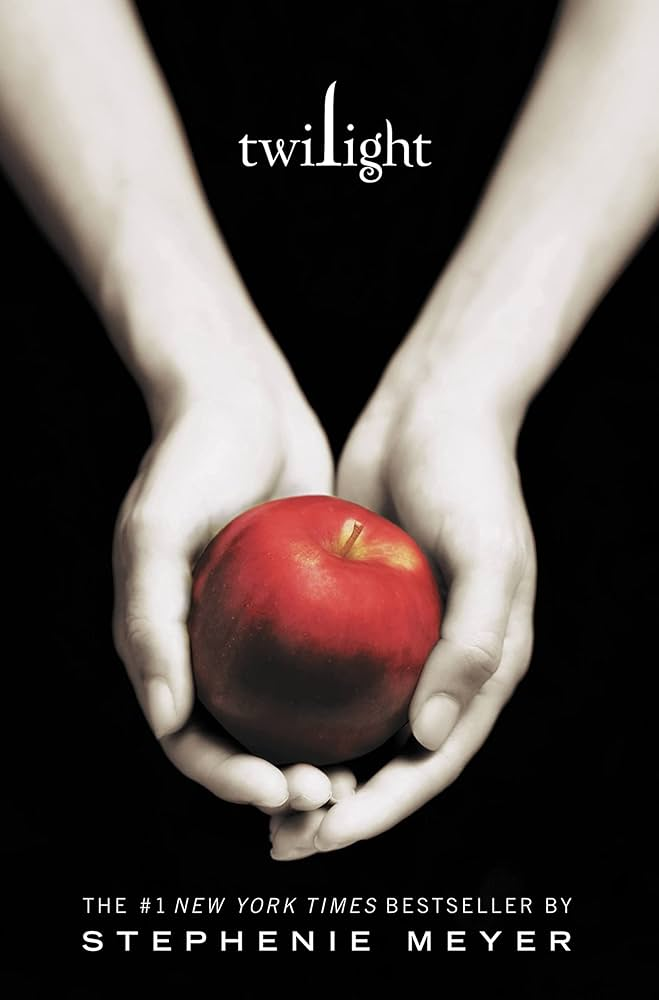
Twilight by Stephanie Meyer I adore the whole trilogy. I actually completely missed the Twilight train as a tween and decided to read them all a few years ago and became obsessed... I even made book-accurate playlist that went a little viral online.
The Secret History by Donna Tartt One of those books that everyone talks about and actually lives up to the hype.
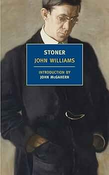
Stoner by John Williams This one also lives up to the hype. I'm also a sucker for slice of life-esque books set during wartimes... I attribute that to how much I enjoyed reading A Separate Peace in high school.
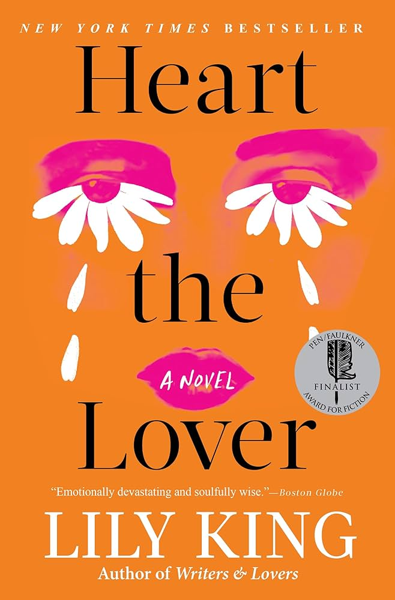
Heart the Lover by Lily King This one was a casual recommendation by a friend and it completely won me over. I especially love King's writing here.
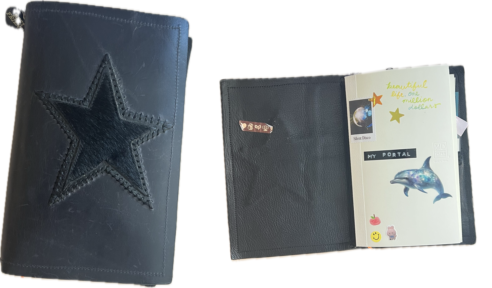
my personal journal (2026)
Catch-all. Midori MD B6 slim (blank) in a veg-tanned leather journal cover I made myself
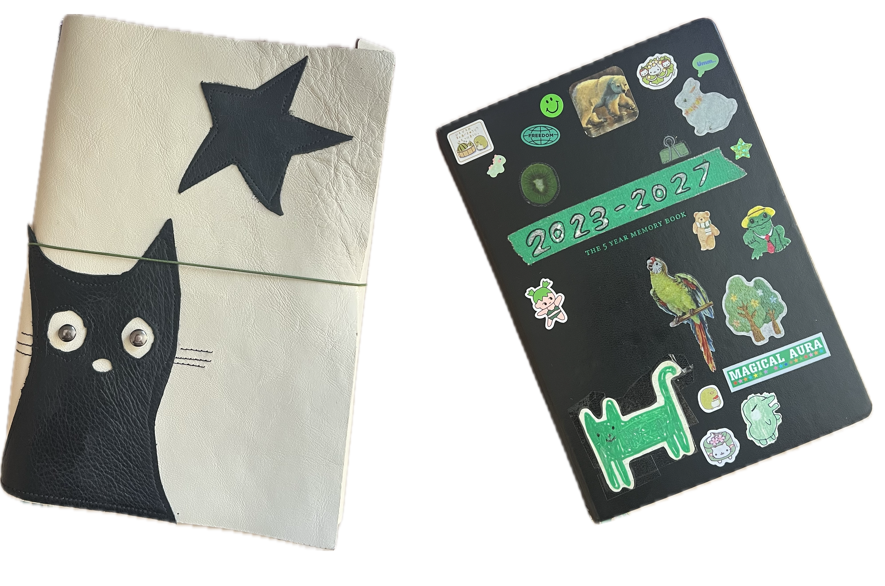
leuchtturm 5-year journal (2023-2027)
Daily journal spanning 5 years in an A5 leather journal cover I made myself
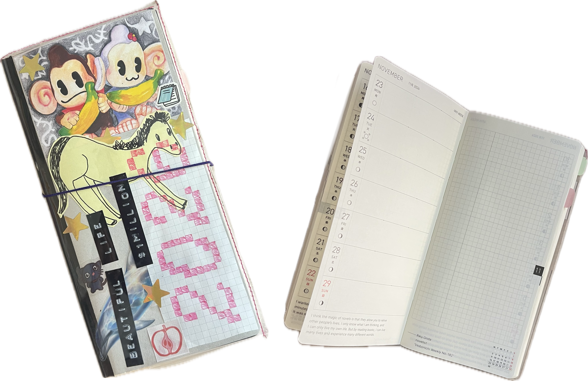
my weekly planner (2026)
Hobonichi sneaker weeks mega that I use for planning only
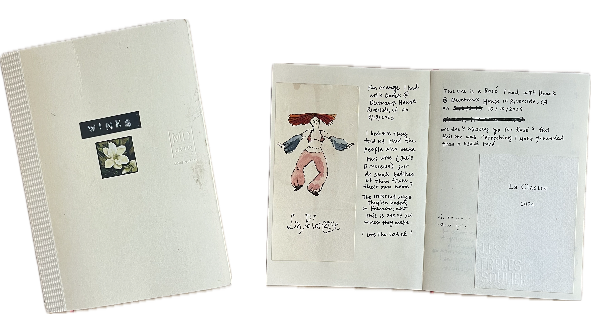
wine journal
Another midori MD A6 (blank) for catching wine labels and the nights spent with them
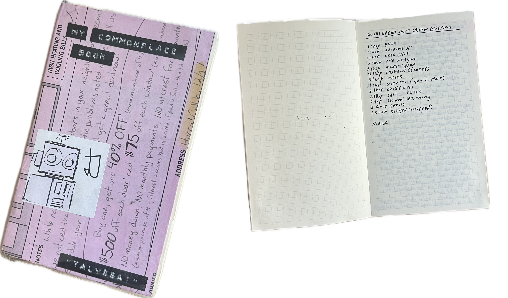
common place journal
yet ANOTHER midori MD B6 slim (grid). I'm not confident about this one, but for now it catches
information and ideas that might be relevant longer than the stuff in my personal journal (i.e. lists, recipies, etc.)
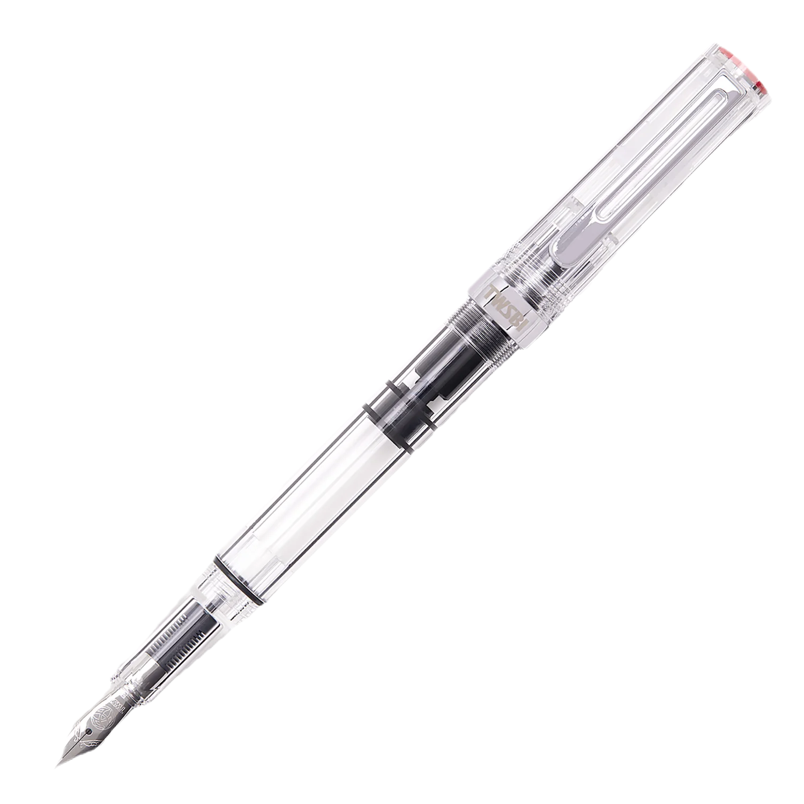
TWISBI Eco
I keep mine inked with platinum carbo black at all times. If I was only allowed one single pen, this would be it.
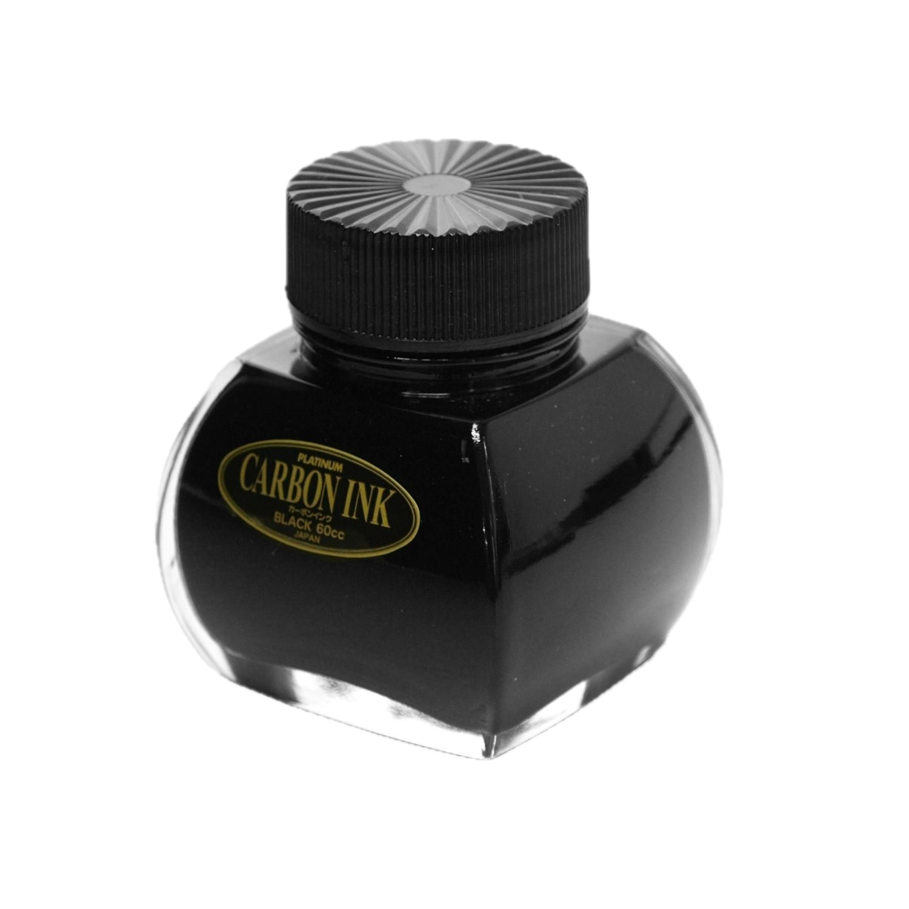
Platinum Carbon Ink
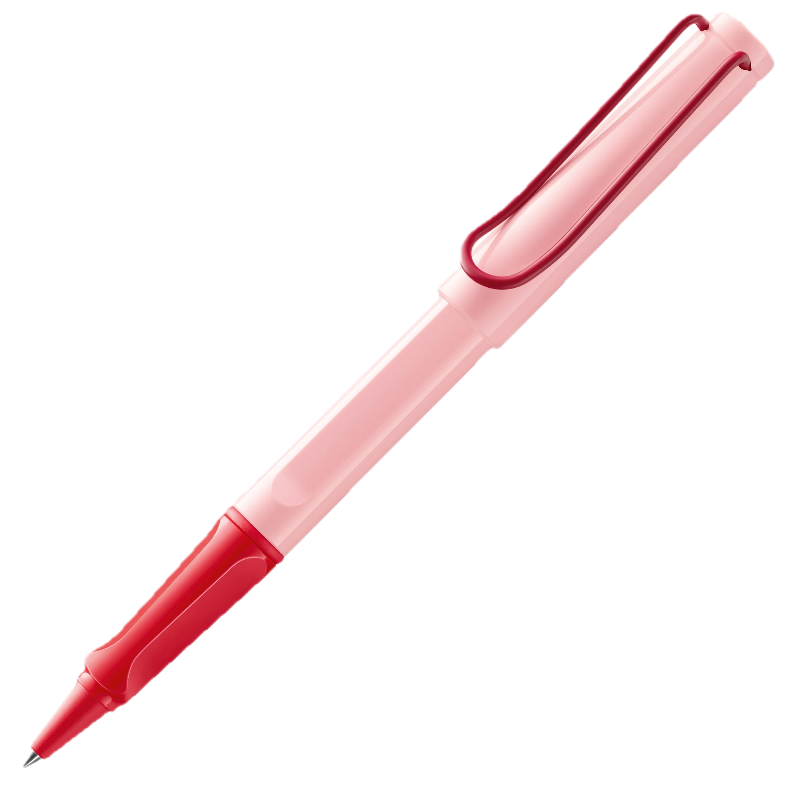
LAMY Safari
I do love my safaris & they're a good alternative to my twisbi since the tips are interchangable and the ink goes into
a converter as opposed to the pen barrel itself. I like using mine to rotate different inks depending on my mood.
Honorable ink mentions:
Favorite albums right now: